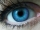
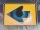
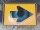
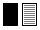
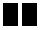

|
Die Symbole in Ihrer Sprachenlernen24-Software
und ihre Funktionen
|
|
|
Anhören, bitte!
Wenn Sie auf das Lautsprechersymbol
klicken, öffnet sich ein Audio-Programm auf Ihrem Rechner und
Sie werden hören, was Sie gerade lesen.
|
|
Ein Schritt nach vorne!
Wenn Sie auf dieses Symbol klicken, gehen Sie einen Schritt
nach vorne.
|
|
Ein Schritt nach hinten!
Wenn Sie auf dieses Symbol klicken, gehen Sie einen Schritt
zurück.
|
|
Alles anzeigen!
Wenn Sie auf dieses Symbol klicken, wird der Inhalt aller
Lektionen angezeigt.
|
|
Sprache wechseln, bitte!
Mit diesem Symbol können Sie Ausgangs- und Zielsprache
Ihrer Abfragen festlegen bzw. vertauschen.
Mit einem Klick wechseln Sie zum Beispiel von der Abfrage der Fremdsprache zur
Abfrage der deutschen Übersetzung.
|
|
Ausdrucken, bitte!
Immer, wenn Sie dieses Symbol sehen, können Sie etwas
ausdrucken.
Mit Hilfe dieses Symbols kommen Sie zum Beispiel gleich zu den vorbereiteten Karteikärtchen.
Hier finden Sie auch eine detaillierte Anleitung, wie das Erstellen der Kärtchen am besten funktioniert.
|

|
Lösung anzeigen!
Wenn Sie eine Abfrage nicht lösen konnten, so klicken Sie
auf dieses Symbol: Die Antwort erscheint. Aber Achtung! Da Sie
jetzt die Lösung angeschaut haben, wird diese Antwort nicht
als richtig gewertet.
|

|
Vorhergegangene Abfrage mit Lösung anzeigen!
Wenn Sie in einer Übung die Abfrage mitsamt der Lösung
noch einmal sehen wollen, klicken Sie bitte auf dieses Symbol.
|

|
Nächste Abfrage mit Lösung anzeigen!
Wenn Sie die nächste Abfrage mitsamt der Lösung
aufrufen wollen, dann drücken Sie bitte auf diesen Knopf.
|
|
Übung beenden!
Durch die Betätigung dieses Knopfes brechen Sie Ihren
Lernvorgang in der Langzeitmethode ab, ohne dass die Auswertung
Ihrer Übungen verloren geht. Auch bekommen Sie einen Startcode, damit Sie an der Stelle, an der Sie abbrechen mussten, nächstes Mal wieder einsteigen können.
|
|
Löschen, bitte!
Sie können sämtliche Wörter oder Sätze
während einer Übung durch Knopfdruck aus Ihrer
Abfrageliste entfernen. Auf diese Weise werden Wörter und
Sätze, die Sie schon kennen, nicht mehr abgefragt und Sie
kommen mit dem Lernen schneller voran!
Bitte beachten Sie: Diese Funktion gilt aber nur für die
gerade ausgeführte Übung. Wenn Sie den Kurs neu starten
oder in eine andere Art der Übung wechseln, werden die
gelöschten Wörter und Sätze wieder neu abgefragt.
Sie löschen also keine Einträge in der Software, sondern
schließen nur manche Abfragen aus der gerade bearbeiteten
Übung aus.
|
|
|
Die Ampel auf Grün schalten!
Dieses Symbol finden Sie nur in der
Quickshow.
Wenn Sie auf die grüne Ampel
klicken, beginnt die Quickshow. Die Informationen werden in dem zeitlichen Abstand, den Sie selber festgelegt haben, gezeigt.
|
|
|
Die Ampel auf Rot schalten!
Dieses Symbol finden Sie nur in der
Quickshow.
Wenn Sie auf die rote Ampel
klicken, hält die Quickshow an. Zum Fortfahren schalten Sie
die Ampel einfach wieder auf Grün.
|
|

|
Die linke Seite verstecken!
|

|
Die rechte Seite verstecken!
|
|

|
Beide Seiten verstecken!
Mit dieser Funktion können Sie
beide Seiten abdecken. So testen Sie, ob Sie an zufällig
gewählten Stellen die Übersetzung in die andere Sprache
schon kennen.
|